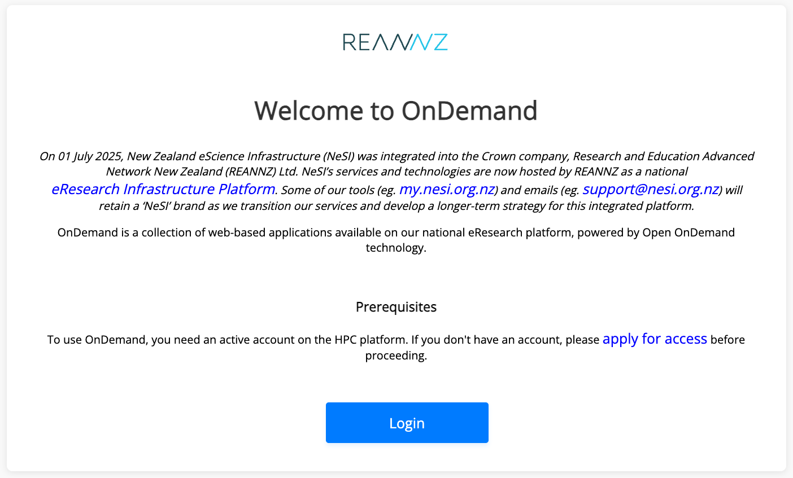
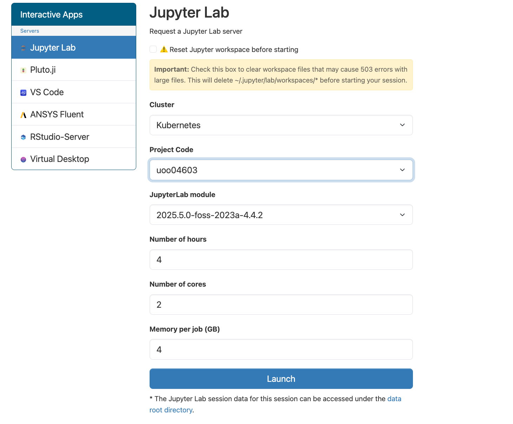
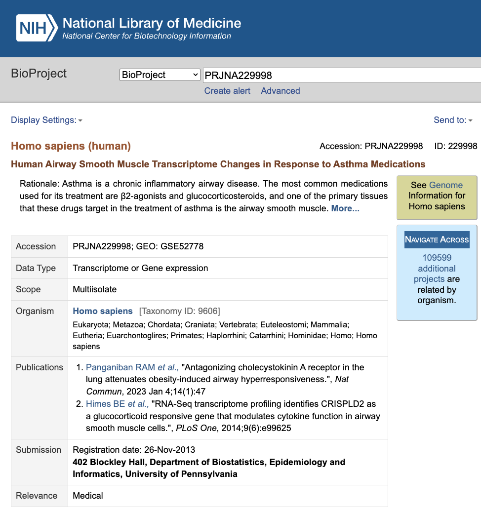
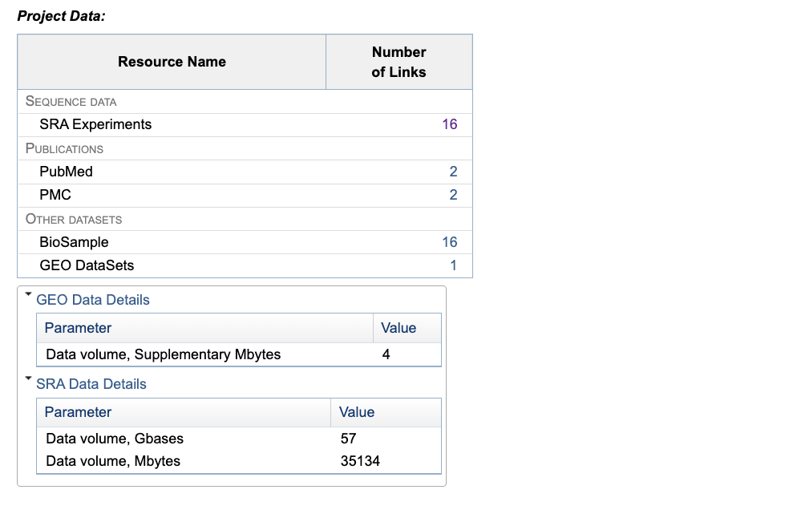

Genomic data storage and management
Your samples have been sequenced, now what?
Genomic data files
Genomic data files are huge, and for one project you will often have several hundred gigabytes (GB) to sometimes terabytes (TB) of data (more on the actual genomic file types in the next section Data wrangling and processing). You most likely won’t be able to store and analyse these on your local computer, or transfer the files in the ‘traditional’ way using portable USB drives, so you’ll need to make use of a high capacity storage (HCS), high performance computing (HPC), and file transfer protocols (FTP). An introduction to genomics is also an introduction to the world of high performance computing!
Caveat: small genomes such as from bacteria often can be transferred, stored and analysed on your local computer.
You have a few options of how you want to store and analyse your data, which may be through HPC/HCS services offered by your University or Institute, or through the national computing and digital network REANNZ.
Research and Education Advanced Network New Zealand (REANNZ)
REANNZ is “..a Crown-owned membership organisation that powers Aotearoa’s research and education network. Launched in 2007, their high-performance national digital network (or NREN) helps members collaborate and contribute to data-intensive and complex science and research initiatives – both here in New Zealand and across the globe.”
They offer many products and services – check out their website here – but here we will focus on their HPC platform that you may chose to use to analyse your data.
Projects on REANNZ
To use the HPC services, you first need to make or be listed as a member on a ‘Project’. A ‘Project’ will have a code (e.g., nesi03181 or uoo00431) and will need to be linked to a funding source to charge back compute resources used. Multiple people can use one Project; this is often the preferable way to use a Project when collaborating on the same dataset or project. You’ll need to discuss whether you need your own Project, or can be added to an existing Project, with whoever is supplying the funding (most likely your PI / supervisor).
Either way, first make your own account using your institutional details by logging in here: https://my.nesi.org.nz/.

From there, you can apply/access/view your Projects, and manage the compute resource allocation of the Project.
Once you have an account and a Project, you can start using the HPC by logging in to Open OnDemand here: ondemand.nesi.org.nz

Once logged in, you’ll see an app-based dashboard.
Click on ‘Jupyter Lab’ and then you can chose a few different settings before launching. For the most part, you will only need to change the Project Code and the number of hours you need the session open. You can leave the number of cores and memory per job as the default lowest settings.

Once the session is open, you can interact with your files through the directory structure on the left, and open either a Terminal or various other scripting programs through the Launcher. More on using the Terminal (also known as shell / unix shell / bash) in the next lesson.
For each Project, you will have a nobackup and a project directory. Keep your raw files in the project directory and do your analysis in the nobackup directory. As you can guess by the name, this directory is not backed up, and is best used for working analyses. Additionally, files not modified after 90 days are auto deleted. Final analysed files and imprortant scripts should be copied into the project directory once you have completed your analysis. You may be surprised by how many intermediate files you make and how much ‘tinkering’ you do during your analyses–making use of the two directories helps keep your file system tidier.
Note: It can be a good idea to back-up raw genomic files on a HCS / reannz freezer?
Getting your genomic files on to the REANNZ cluster
How do we actually get the genomic sequence files from the sequencing facility to the REANNZ cluster?
FILL IN HERE
GLOBUS
Want more info?
- REANNZ provide extensive documentation on how to use their High Performance Computing (HPC) platforms.
In July 2025, the New Zealand eScience Infrastructure (NeSI) was integrated into REANNZ. You may have heard of NeSI before, but if not, it is good to be aware of the name, as you’ll see some legacy branding in the REANNZ documentation or log-in platform (e.g., my.nesi.org.nz is still in use).
Aoraki at the University of Otago
If you are a University of Otago staff or student, you can use the “Aoraki” HPC cluster. Like REANNZ, you will also connect to the cluster through an Open OnDemand app-based interactive web page.
https://rtis.cspages.otago.ac.nz/research-computing/cluster/index.html
Other universities HPC/HCS options?
Auckland?
Ethical data management
FAIR and CARE
In 2016, the FAIR principles were published in Scientific Data. These guidelines set to provide a standard through which to improve digital assets:
- Findability
- Accessibility
- Interoperability
- Reuse
Part of conducting FAIR research is having a reproducible research pipeline. One way this can be done is by documenting your work on a version control system like GitHub. See our GA workshop for more on Reproducibility with Git and Quarto.
Open science advocates have embraced this FAIR framework, while others critise its lack of protection of data, for not considering the rights and interest of those that should hold governance over data, in particular, indigenous peoples. In response to this, the CARE framework has also been proposed by Global Indigenous Data Analysis, to complement the existing FAIR principles:
- Collective benefit
- Authority to control
- Responsibility
- Ethics

This story “Open with care; Indigenous researchers and communities are reshaping how Western science thinks about data ownership” is an interesting read on these perspectives.
The Aotearoa Genomic Data Repository (AGDR) and Rakeiora platform are examples of services that have adopted these CARE principles.
Aotearoa Genomic Data Repository (AGDR)
From the AGDR website:
“The Aotearoa Genomic Data Repository provides secure within-nation storage, management and sharing of non-human genomic data generated from biological and environmental samples originating in Aotearoa New Zealand. This resource has been developed to follow the principles of Māori Data Sovereignty, and to enable kaitiakitanga (guardianship), so that iwi, hapū and whānau (tribes, kinship groups and families) can effectively exercise their responsibilities as guardians over biological entities that are taonga (precious or treasured). While the repository is designed to facilitate the sharing of data — making it findable by researchers and interoperable with data held in other genomic repositories — the decision-making process regarding who can access the data is entirely in the hands of those holding kaitiakitanga over each data set.””
The AGDR is enabled by MBIE funding to Genomics Aotearoa.
Rakeiora Genomics platform
The Rakeiora Genomics Platform is designed to enable and test pilot precision medicine research, linking genomics and health.
They have chosen a walled garden approach to this infrastructure.
“This means that all genomic data and health data, and its analysis, are undertaken only within this computational environment – the data never leave and are certainly never downloaded to a researcher’s own computer or a hospital clinical laboratory computer…
…Its modular nature will allow linkage (with consent) to other health data systems currently under development in Aotearoa New Zealand. This approach in particular addresses transparency of use and control over narratives. Lack of these features in other precision medicine platforms worldwide has led to significant problems for patients and research participants, including indigenous communities; learning from these negative experiences is key to avoid repeating them.” – From the Genomics Aotearoa website.
Public data
You are probably familiar with using the NIH NCBI database, hosted by the United States Government, for things such as BLAST searches and literature searches.
NCBI has a repository called the Sequence Read Archive (SRA), which is where a large proportion of genomic data from all over the world is stored, as publicly available raw, high-throughput, sequencing data.
If your data has no ethical concerns, this can be a great resource for making your data freely available and easily citeable in publications.
Here we will not go into detail on how to either download or upload data to the SRA (see documentation on their website). But some points to be aware of are:
A BioProject is a way to link all the sequencing and biological data together under one umbrella (as a general rule, 1 publication = 1 BioProject, but many groups use a single BioProject for multiple publications). If you are uploading your own data, we recommend starting with creating a BioProject, which will then give you a single accession (e.g., PRJNA31257) to use for the next steps (BioSample + SRA raw read uploads).
A BioSample is a unique descriptor of the biological source material (e.g, all the biological metadata of your sample – species, sex, age, location, tissue). This is often (but not strictly) set up as 1 BioSample = 1 library. Each BioSample accession will be linked to the matching sequence data in the SRA, and all housed under one BioProject accession number.
Equally, if you are downloading data from the SRA, you can make use of BioProject and BioSample accessions to identify and orientate yourself to the data.
Example BioProject:
You can see there are 16 SRA experiments and 16 BioSamples – you can guess that these probably match one to one.
There are also GEO datasets (Gene Expression Omnibus) associated with this study, which are repositories for functional genomic data. These are a more processed form of the data e.g., count tables and differential expression data.


This is not the only public repository of sequence reads, some other examples include: European Nucleotide Archive (ENA) and the DNA data bank of Japan DDBJ Sequence Read Archive (DRA). These data banks are linked together via the International Nucleotide Sequence Database Collaboration. NCBI also details some of the collaborative projects here (e.g., The Taxonomy Project, The Feature Table).